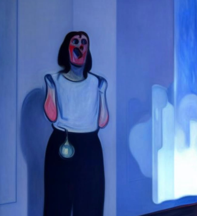
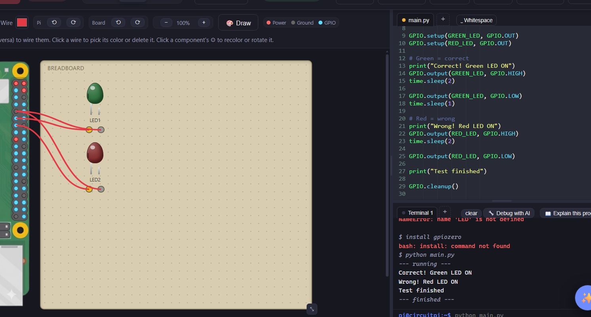
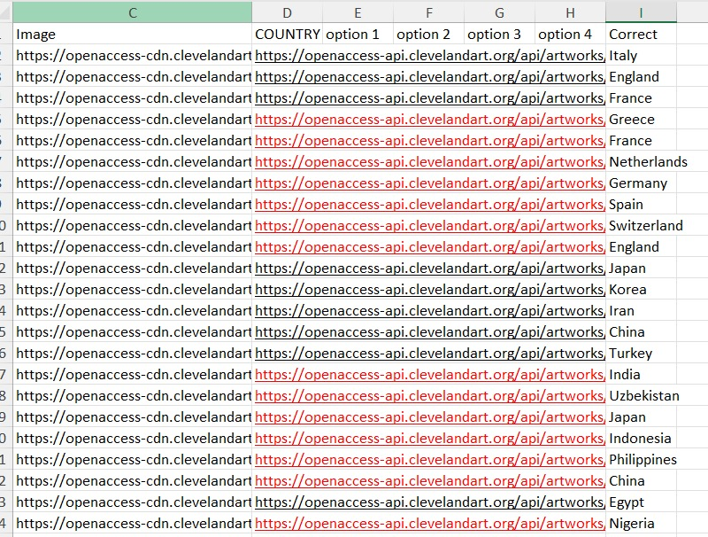
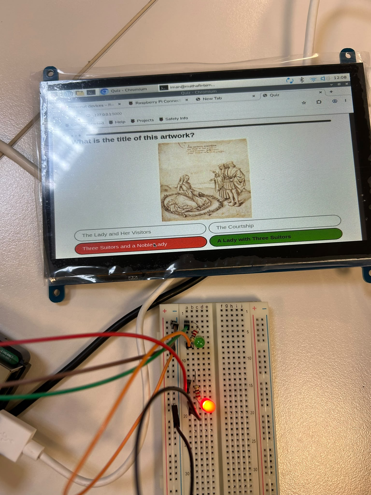
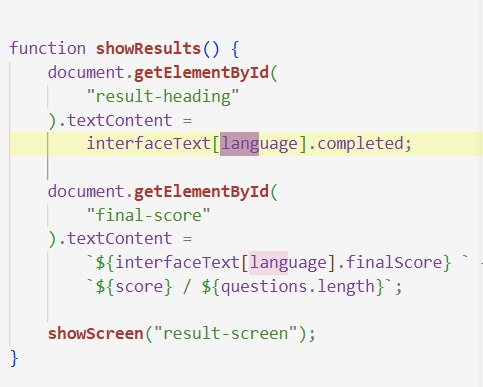

Sunday: I looked at the different links that Christophe sent, and it was about AI being used at the Museum. After that, we went to the Life Hub Exhibition. Inside, we saw different uses of technologies such as sensors, projectors, soundscapes, and interactive touchscreens to create an immersive and engaging experience. What I have noticed is that it was more engaging with the visitors as it was really aimed to be interactive; almost every station had touch screens, and that is one of the best ways to gain information about the topic. The staff thoroughly, clearly, and repeatedly showed us the way to make sure we do not get lost as well.

Monday: I started the day by completing the detailed report for the Life Hub exhibition and submitted it to Christophe. After that, I researched different projects that use Raspberry Pi, Arduino, and sensors, which gave me an idea of how we could combine what we had learned from our previous tasks. Otba and I discussed our ideas and eventually decided to create an interactive quiz game inspired by the Life Hub exhibition, where a correct answer produces a green light and an incorrect answer produces a red light. For our project, we decided to use LED lights for this feedback, while the quiz asks visitors to guess the continent, medium, year, and title of different artworks. The idea is for visitors to play the game before exploring the museum to test their knowledge, then play again afterward to see if their score improves. The questions will also be randomized, and the game will be available in both Arabic and English.
Tuesday: I started collecting the API information needed for the quiz, including the continent, medium, year, title, and image links of different artworks. I then prepared the questions, answer options, and correct answers for each category before giving the completed content to Otba. After finishing the quiz content, I started working on the Raspberry Pi setup by connecting the GPIO pins to the LED lights. Once the setup was complete, I tested the circuit using a simulator to make sure that the connections and LED responses were working correctly. The simulation worked successfully, which allowed us to move forward with testing the game on the actual Raspberry Pi.


Wednesday: I worked on the backend of the game by adding Flask so that the game could run through a browser and be used with the Raspberry Pi touchscreen. To test the setup, I created a simple HTML and CSS interface and then added the Arabic version of the questions and options. I also updated game.js so that the game displays the appropriate content depending on whether the user selects Arabic or English. In app.py, I added the connection between the game and the Raspberry Pi GPIO pins so that signals could be sent to control the LED lights for correct and incorrect answers. After Otba finished the CSS, we uploaded the project to GitHub and pulled the files onto the Raspberry Pi for testing. We initially encountered an error because RPi.GPIO was unavailable, but after resolving it by using Raspberry Pi Connect, the game ran successfully. The LEDs were still difficult to see because they were too dim, so we continued troubleshooting the circuit and found that the resistors were the issue. After changing them to 220-ohm resistors, the LEDs became clearly visible and the game worked as intended.

